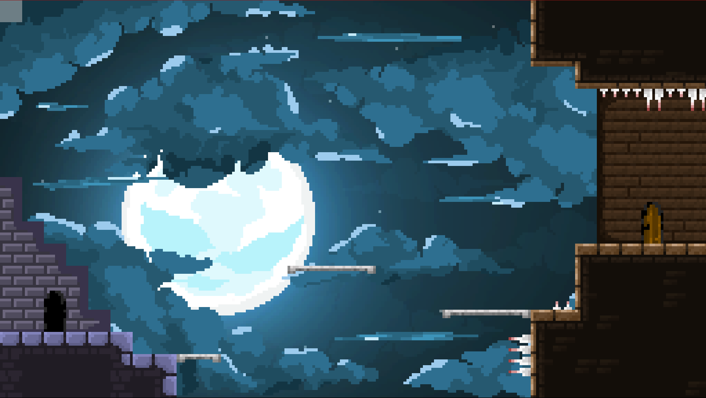

Canvas Castle (working title) is an upcoming web game I've been working on. The game is a platformer make purely in JavaScript and on the HTML canvas. All of the rendering, level encoding, physics, art, and animation is all my own work and made without a dedicated game engine. In this sense, it's much more of an exercise in difficult programming than it is a high quality video game (after all, why one earth would you make a game in JavaScript!). Nonetheless, I've tried to put in as much effort as I can to create a good product.
I'm hoping to release Canvas Castle on 31 July 2024, at which time I will add more to this article and go over some of the fascinating code I've had to write for the game.
